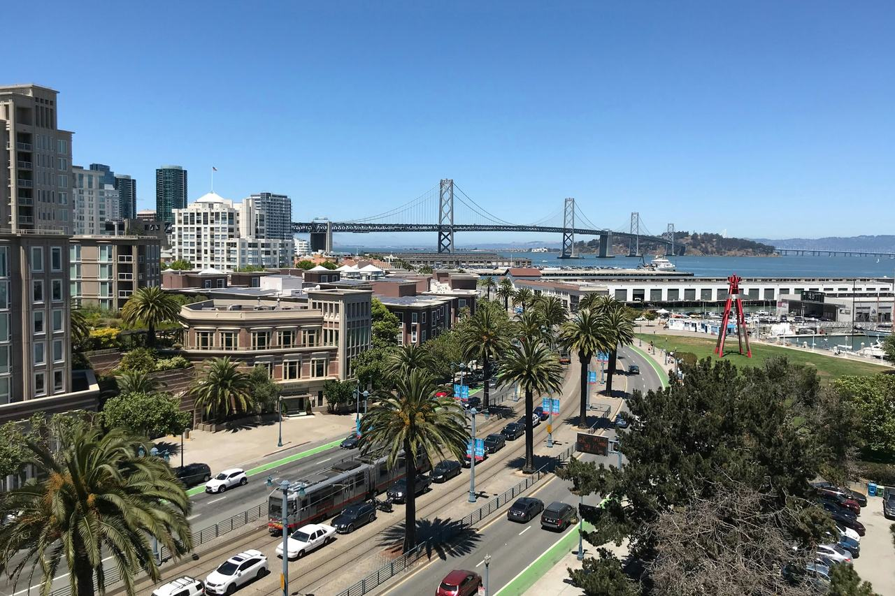

South Beach
A former industrial and warehouse district along the bay south of Market, much of it within the South End Historic District.

Map
Named buildings and landmarks
-
1
-
2
-
3
-
4
-
5
-
6
-
7
-
8
-
9
-
10
-
11
-
12
Also here: Anna Davidow Building, Auerbach Building, General Cigar Company Building, Clinton Construction, Winchester-Simmons Co, Kohler Company Building, MacDonald & Kahn Building, U.S. Radiator Building, The Crane Company Warehouse, Delancey Street Center, California Electric Light Company, Moore Investment Company Building, Moore Shipbuilding.
Streets documented so far
- Brannan Street
6 buildings, built 1909–2016; 1 in the South End Historic District. - Clarence Place
2 buildings, built 1996–2012; 2 in the South End Historic District. - Colin P Kelly Jr Street
1 building, built 1908; 1 in the South End Historic District. - Folsom Street
1 building, built 2000. - Howard Street
2 buildings, built 1973–1981. - King Street
1 building, built 1913; 1 in the South End Historic District. - Main Street
3 buildings, built 1973. - Market Street
1 building, built 1917. - Mission Street
1 building, built 1987. - Second Street
4 buildings, built 1925–1927; 4 in the South End Historic District. - Spear Street
3 buildings, built 1925–1986. - Steuart Street
1 building, built 1907. - The Embarcadero
2 buildings, built 1896–1984; 1 in the Port of San Francisco Embarcadero Historic District. - Third Street
A 1920 bank building marking the site of Jack London's 1876 birthplace. - Townsend Street
6 buildings, built 1900–1922; 6 in the South End Historic District.
Parks and public spaces
- Buckeye Grove
Neighborhood park or playground, 2.1 acres. - Clipper Cove Park
Neighborhood park or playground, 1.4 acres. - Willow Bridge Gardens
Neighborhood park or playground, 1.8 acres. - Yerba Buena Natural Areas
Regional park, 45.2 acres.
Historic districts here
Adjacent neighborhoods
The East Cut adjoins north and the Financial District further north along the Embarcadero — this site files the three separately, though the city's own boundary counts them as one neighborhood. South of Market is west and Mission Bay south past the ballpark.